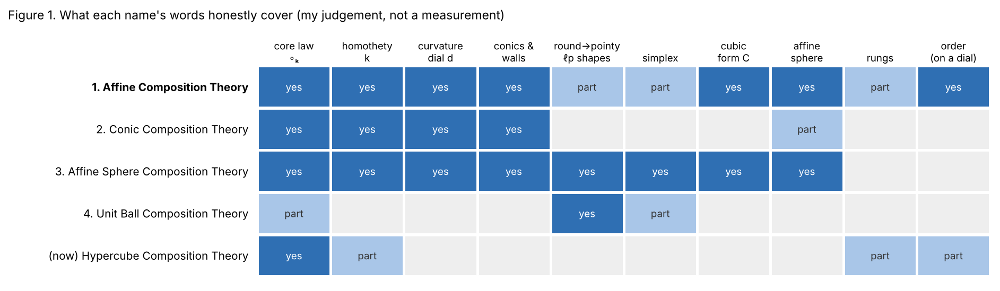
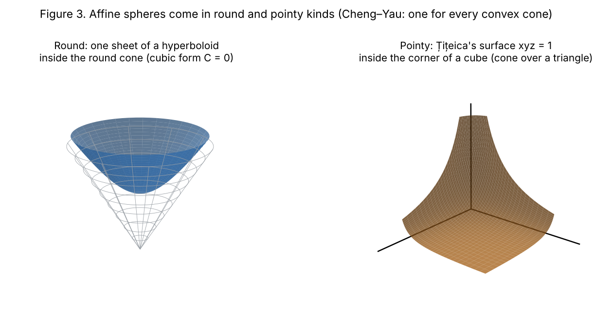
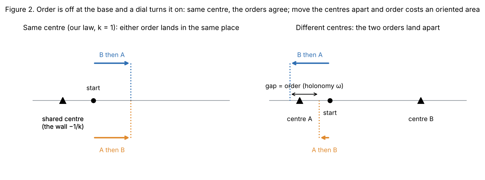

DRAFT · Nov 26, 2026 · Brennan picked this name on Nov 26. It replaces Hypercube Composition Theory (Nov 25) and Fused Hyperoperation Algebra.
The theory's name: Affine Composition Theory
The cube is now one setting among round and pointy shapes, so "Hypercube" no longer covers the model. Every dial already has an affine-geometry name, and the core law is literally composing stretches, so Affine Composition Theory covers the most while claiming nothing that isn't proved, including order, which is optional and switched on by a dial.

Dark blue: the name's words cover it. Light blue: partly. My judgement, not a measurement.
The short list, best first
Affine Composition Theory. Covers the core law, homothety k, the curvature dial d and its readings, the conics, the cubic form C, the affine sphere, and order as something a dial switches on. Leaves out: the ℓp exponent p has no affine name (it is a norm idea that Blaschke's affine perimeter only measures), and for d ≠ 0 the maps being composed are projective rather than affine. No field or book uses the phrase (web search, Nov 26). Neighbour to cite, not a clash: "Calabi composition", a named product of affine spheres.
Conic Composition Theory. The safest true name for the plane: each (k, d) setting is one conic, and our law is its chord rule, the classical group law on a conic. Leaves out the round-to-pointy shapes, C, the simplex and the rungs. "Conic" also means conic optimisation.
Affine Sphere Composition Theory. The one existing shape family that holds round and pointy together: every convex cone has its own affine sphere (Cheng–Yau). Covers both plane dials, C and every shape through its cone. Leaves out the rungs, and it leans on a DRAFT result: our laws on the non-round affine spheres aren't worked out, so today it promises more than is proved.
Unit Ball Composition Theory. The plain name for the ℓp family, cross-polytope to ball to cube. Leaves out the conic plane, C, the rungs, and the simplex, which isn't a norm's ball.

Affine spheres come round (cubic form zero) and pointy (Țițeica's xyz = 1 in a cube's corner). This is why candidate 3 is tempting.
Is composition, and its order, still key?
Yes. Order isn't required, but the theory can turn it on when it's needed, and that's already in the repo:
Off at the base: a ∘ₖ b is "stretch by b, then by a", both about one centre, the wall −1/k. Stretches about one centre commute, so the core law gives the same answer either way round.
On by a dial: the q dial (yx = q·xy) runs from order ignored to every order counts; ħ does the same with the same a + b + ab over the Moyal star product, commutative at ħ = 0 (order-dial page, sections 4–5). The checkerboard page runs one chain: dial −1 gives Kac's walk and dial −i gives Feynman's checkerboard, where every ordered sub-chain is a path.
What order costs: an oriented area each time. Move two stretch centres apart and the gap is (c₁ − c₂)(r₁ − 1)(r₂ − 1); in quantum phase space it is the Weyl phase set by the area ab.

"Composition" stays the right word: the theory composes maps, order is optional, and a dial switches it on.
Does this change the pick? No, it strengthens it. Affine geometry is the geometry that keeps area, and the price of order is an oriented area every place it shows up. One caveat stays: the quantum route goes through the Heisenberg group, not the affine group, so the name doesn't claim quantum mechanics is affine.
Dropped
"Convex composition": reads as the composition rules for convex functions in optimisation.
"Superellipsoid": a graphics term, and the ball family only.
"Projective Composition Theory": true for the plane, but the steer was affine names, and projective was only a bridge on the dial-names page.
Where I'm unsure
The phrase searches found no field named by any of the four; that is a web search, not a guarantee.
Țițeica's surface over the octant and the Cheng–Yau theorem come from Loftin's survey; I didn't re-derive them.